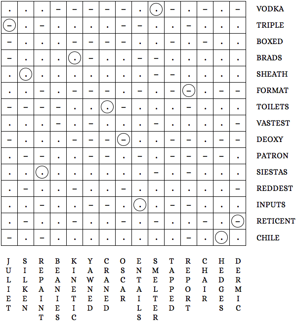

Authors: Eben Olson and Quinn Mahoney
This is a Morse code crossword. Each entry is 15 dots and dashes long and fits in an entire row or column, though they are not given in order. Also, several words from the NATO phonetic alphabet appear in the clues and entries.
In the completed grid below, the first group of entries (one through fifteen) is written across and the second group (sixteen through thirty) is written downwards, but switching these does not affect the solution.
Once you fill out the grid, place a circle where the indicated clues cross. Notice that the symbols
spell
AFTER (.– ..–. – . .–.) reading down
and DELTA (–.. . .–.. – .–) reading across.
The answer comes after delta in the NATO alphabet: ECHO.

| 1. | Encased (BOXED) |
| 2. | Bird and Pitt (BRADS) |
| 3. | Lima is to Peru as Santiago is to blank (CHILE) |
| 4. | Prefix for ribonucleic acid (DEOXY) |
| 5. | Drive-erasing command (FORMAT) |
| 6. | Pins one, two, four, five, nine, ten, twelve, and thirteen on a seventy-four hundred (INPUTS) |
| 7. | Artist's supporter (PATRON) |
| 8. | Most sunburned or least cooked? (REDDEST) |
| 9. | Taciturn (RETICENT) |
| 10. | Scabbard (SHEATH) |
| 11. | Naps (SIESTAS) |
| 12. | Loos (TOILETS) |
| 13. | Chief Wilson set the record for this type of hit (TRIPLE) |
| 14. | Most expansive (VASTEST) |
| 15. | Whiskey alternative (VODKA) |
| 16. | Nerdy propeller hats (BEANIES) |
| 17. | Committee head (CHAIR) |
| 18. | Stretched the neck to watch (CRANED) |
| 19. | Of the skin or, when preceded by hypo-, a type of needle (DERMIC) |
| 20. | Implies necessarily (ENTAILS) |
| 21. | Maze walls (HEDGES) |
| 22. | Romeo's partner (JULIET) |
| 23. | Type of energy or friction (KINETIC) |
| 24. | Cyril and Vyvyan's papa (OSCAR) |
| 25. | Freshen the walls (REPAINT) |
| 26. | Colbert show (REPORT) |
| 27. | Like luxurious sheets (SILKEN) |
| 28. | Ore-processing machine (SMELTER) |
| 29. | Putted a golf ball lightly (TAPPED) |
| 30. | Showed sleepiness (YAWNED) |
| Place circle where 2 (BRADS) crosses 23 (KINETIC) | |
| Place circle where 3 (CHILE) crosses 21 (HEDGES) | |
| Place circle where 4 (DEOXY) crosses 24 (OSCAR) | |
| Place circle where 5 (FORMAT) crosses 26 (REPORT) | |
| Place circle where 6 (INPUTS) crosses 20 (ENTAILS) | |
| Place circle where 9 (RETICENT) crosses 19 (DERMIC) | |
| Place circle where 10 (SHEATH) crosses 27 (SILKEN) | |
| Place circle where 11 (SIESTAS) crosses 25 (REPAINT) | |
| Place circle where 12 (TOILETS) crosses 18 (CRANED) | |
| Place circle where 13 (TRIPLE) crosses 22 (JULIET) | |
| Place circle where 15 (VODKA) crosses 28 (SMELTER) | |